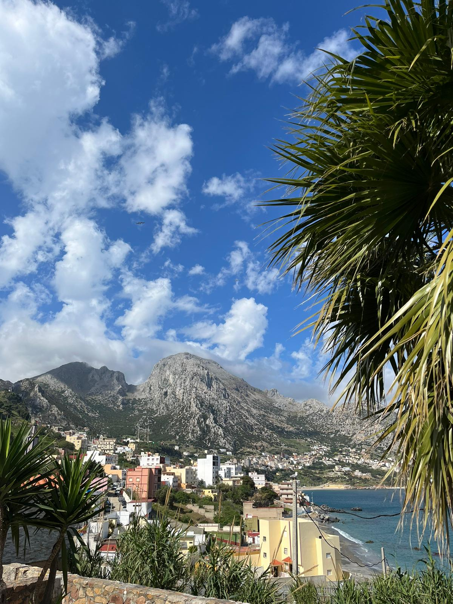
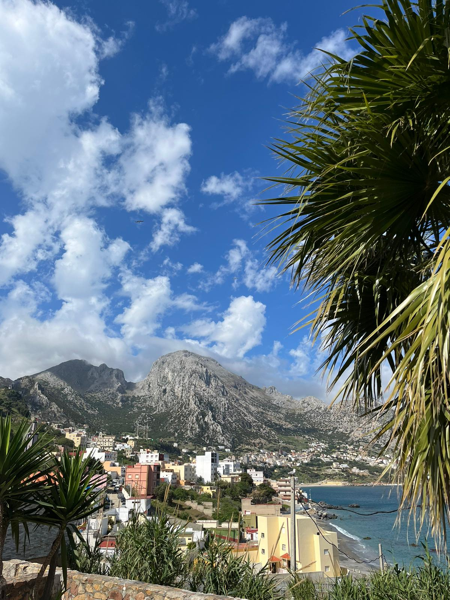
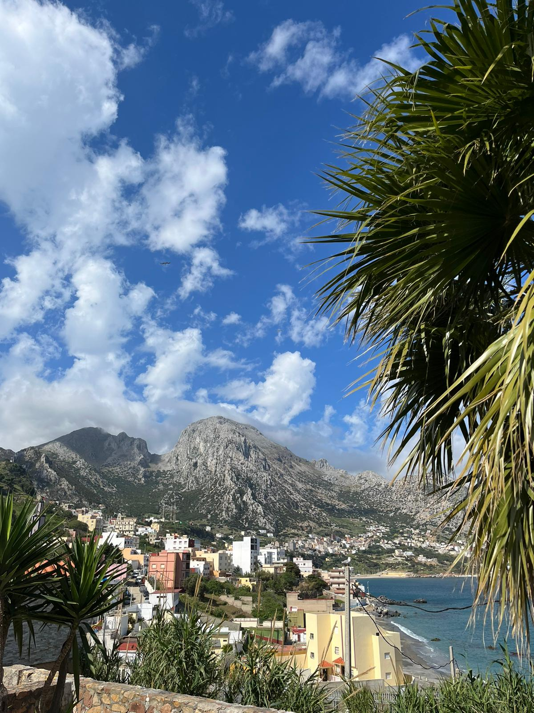

Traveling has become a huge part of my life. There’s something special about falling in love with new places, cultures, and diversity. I enjoy the authenticity of small streets, especially when visiting a capital, that’s how you really get to know the spirit of a city. On the other hand, my love of photography is not just because you can keep a memory forever, it’s because photographs are the stories I fail to put into words.
I put two of my passions in a gallery. Enjoy.
